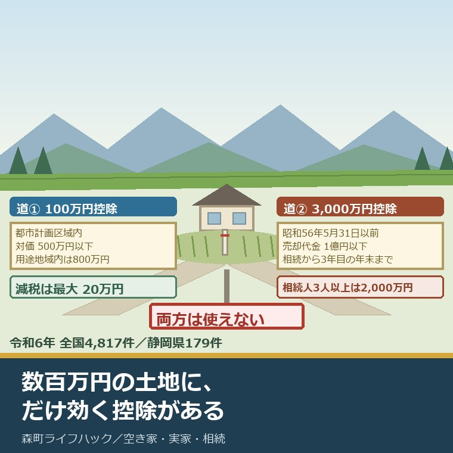
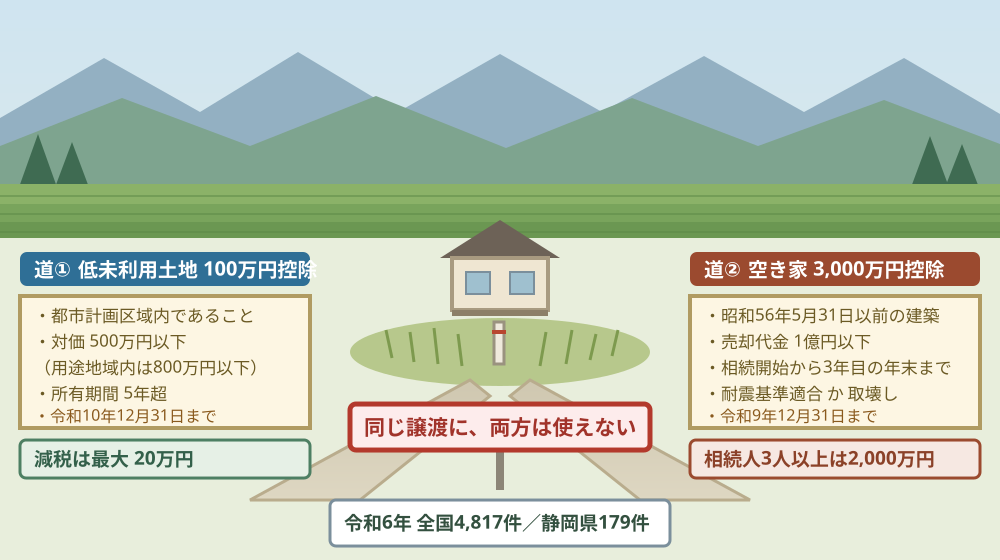
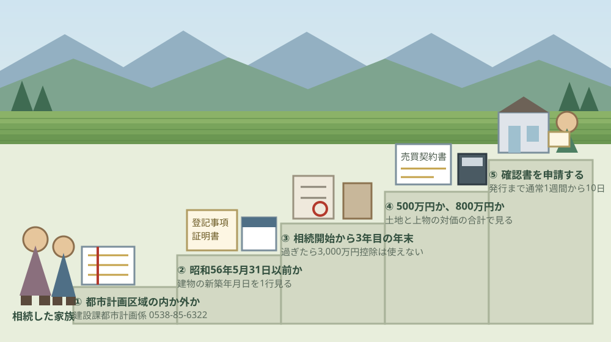

低未利用土地の100万円控除｜森町で500万円以下の土地を売る

この記事の要点
Q. 森町に相続した土地が数百万円にしかなりません。売っても手残りはないのでしょうか。
A. 都市計画区域内で譲渡の対価が500万円以下なら、長期譲渡所得から100万円を引ける制度があります。減税額は最大20万円。3,000万円控除とは同じ譲渡で併用できないので、先に「実家の建物が使えるか」を確かめてください。確認書は森町役場定住推進課が出します。
静岡県周智郡森町（遠州森町）に、親から受け継いだ土地がある。草を刈りに年に何度か通うだけで、使い道は決まっていない。この記事は、そういうご家族に向けて書いています。
相談でよく聞く言葉があります。「売っても数百万円にしかならない。手数料と税金を引いたら、残らないでしょう」。その感覚は、まったく的外れではありません。
ただ、数百万円の土地にだけ効く控除が用意されています。低未利用土地等を譲渡した場合の長期譲渡所得の特別控除、通称100万円控除です。根拠は租税特別措置法第35条の3です。
そして今年、この制度に動きがありました。令和8年度税制改正で、適用期限が令和10年12月31日まで3年間延長されました。森町公式のページには、まだ古い期限が載っています。
今日は2026年8月25日。数字と条件を順に並べ、3,000万円控除との分かれ目を示し、最後に今日できることを書きます。
公式情報から確定できること
2026年8月25日時点で、国土交通省、国税庁、森町公式から確認できたことを並べます。低未利用土地の100万円控除は、令和2年7月1日に始まった制度です。出典は記事の末尾に載せています。
一つ目。控除額は100万円です。国土交通省によれば、個人が保有する低未利用土地等を譲渡した場合の長期譲渡所得の金額から100万円を控除する制度で、令和2年度税制改正で創設されました。
二つ目。減税額は最大20万円です。同省の資料は「控除額の20％分（最大20万円）の減税」と明記しています。譲渡所得には所得税15％と住民税5％がかかるためです。
三つ目。期限が令和10年12月31日まで延びました。国土交通省不動産市場整備課長通知（令和8年4月2日改正・国不動整第89号）は、「令和７年12月末をもって適用期限を迎えることになっていたところ、令和８年度税制改正において適用期限が令和10年12月末まで３年間延長されることとなった」と記しています。
四つ目。上限は500万円、区域によっては800万円です。同じ通知によれば、都市計画区域内の低未利用土地等について、土地とその上物の譲渡の対価の合計が500万円を超えないことが要件です。
五つ目。800万円になるのは二つの区域だけです。同じ通知によれば、令和5年1月1日から令和10年12月31日までの譲渡で、市街化区域または区域区分が定められていない都市計画区域のうち用途地域が定められている区域、および所有者不明土地対策計画を作成した自治体の区域（都市計画区域に限る）にある場合に限られます。
六つ目。所有期間は5年超が要件です。国税庁によれば、譲渡の年の1月1日において所有期間が5年を超えるものの譲渡であることが必要です。相続で取得した土地は、被相続人の所有期間を引き継いで判定します。
七つ目。身内への譲渡は対象外です。同じ通知によれば、配偶者、直系血族、生計を一にする親族などへの譲渡は要件を満たしません。
八つ目。売った後に使われることが要件です。同じ通知は、譲渡後に低未利用土地等のままとなる場合、駐車場や資材置場として使う場合は対象にならないと記しています。
九つ目。コインパーキングは明確に除かれています。同じ通知は「譲渡後にコインパーキングとして利用される場合は、『譲渡の後に低未利用土地等の利用がされる場合』に該当しないため、本特例措置の適用対象とはならない」と書いています。立体駐車場は認めて差し支えないとされています。
十番目。買取再販は認められます。同じ通知によれば、宅地建物取引業者が空き家となっている中古住宅を買い取り、一定の質の向上をはかるリフォームを行った後に売却する形は、譲渡後の利用として認めて差し支えないとされています。単に利用せず転売する場合は原則として認められません。
十一番目。他の控除との併用ができません。同じ通知によれば、所得税法第58条、租税特別措置法第33条の4、第34条から第35条の2までの特例措置の適用を受けないことが要件です。3,000万円控除は同法第35条にあたります。
十二番目。令和6年の確認書交付は全国4,817件です。国土交通省の報道発表（令和8年3月31日）によれば、令和6年1月から12月までに自治体が交付した低未利用土地等確認書は4,817件で、全ての都道府県に交付実績がありました。
十三番目。静岡県は179件でした。同じ報道発表の都道府県別資料によれば、静岡県の令和6年の交付件数は179件、うち譲渡の対価が500万円を超えるものが19件です。都道府県平均は約102件でした。
十四番目。1件あたりの譲渡の対価は平均303万円です。同じ資料によれば、土地とその上物の合計で平均303万円。令和5年の再集計値278万円から上がっています。
十五番目。譲渡前の状態は空き地が半分です。同じ資料によれば、空き地49.6％、空き家37.9％、耕作放棄地6.2％、空き店舗0.7％、その他5.6％でした。
十六番目。売った後の7割は住宅になっています。同じ資料によれば、譲渡後の利用は住宅72.1％、その他の事業利用6.0％、工場・作業場3.4％、店舗3.3％でした。
十七番目。持ち主の3人に2人は31年以上持っていた土地です。同じ資料によれば、所有期間は51年超が30.9％、41年から50年が19.8％、31年から40年が14.4％。合わせて65.1％が31年以上でした。
十八番目。森町の都市計画区域は3,198ヘクタールです。森町公式の「森町の都市計画」（令和7年4月1日現在）によれば、都市計画区域は3,198ヘクタール、31.98平方キロメートルで、行政区域133.91平方キロメートルの23.8％にあたります。
十九番目。森町には用途地域があります。同じ資料によれば、第一種低層住居専用地域約43.5ヘクタール、第一種住居地域約68.5ヘクタール、工業専用地域約80.0ヘクタールなど9種類が定められ、用途地域内人口は6,133人です。行政人口16,871人の36.4％にあたります。
二十番目。確認書は森町役場定住推進課が出します。森町公式によれば、低未利用土地等確認書は定住推進課移住交流係（0538-85-6321）が発行し、森町役場別館2階へ書類一式を持参するか郵送します。
二十一番目。発行までは通常1週間から10日です。同じページによれば、申請から発行までには通常1週間から10日ほどかかり、書類の不備や担当官庁への照会があるとさらに日数を要します。
二十二番目。必要な書類は5種類です。同じページによれば、低未利用土地等確認申請書、売買契約書の写し、空き地・空き家バンクへの登録が確認できる書類か宅地建物取引業者の広告か電気・水道・ガスの使用中止日が確認できる書類のいずれか、譲渡後の利用を証した様式、登記事項証明書です。
二十三番目。確認書は特例を確約する書類ではありません。同じページは、そう明記しています。国土交通省も、確認書の交付後に他の要件を満たさず適用にならないこともあり得ると注記しています。
二十四番目。3,000万円控除の期限は令和9年12月31日です。国税庁によれば、被相続人の居住用財産（空き家）に係る譲渡所得の特別控除は、平成28年4月1日から令和9年12月31日までの譲渡が対象で、控除額は最高3,000万円です。
二十五番目。相続人が3人以上だと2,000万円に下がります。同じページによれば、令和6年1月1日以後の譲渡で、家屋と敷地を相続または遺贈により取得した相続人の数が3人以上である場合は2,000万円までとなります。

この絵で描きたかったのは、選ぶのではなく、どちらか一方しか残らない場合が多いという点です。3,000万円控除は建物の条件が厳しく、100万円控除は価格と区域の条件が厳しい。両方の条件から外れる土地も、森町には確実にあります。
森町の土地に当てはめると、どこまでが対象か
ここからは、公表された数字を割り戻します。私の計算であることを先に断っておきます。
まず、制度がどれくらい使われているかです。令和6年の4,817件を全国1,741市区町村で割ると、1市区町村あたり年2.8件になります。都市計画区域を持たない自治体もあるので、実際の分母はもう少し小さいはずです。
静岡県で見ると、少し濃くなります。179件を県内35市町で割ると、1市町あたり年5.1件。森町の規模なら、年に数件あるかどうかという水準です。
次に、金額です。1件あたりの譲渡の対価が平均303万円ですから、この制度は数百万円の取引のために作られています。森町公式の空き家・空き地バンクに公開されている空き地は12件、売却金額は100万円から800万円（2026年8月17日更新）。ちょうど同じ帯です。
ここからが、私の商売感覚での翻訳です。300万円の土地を売ったとき、宅地建物取引業者の報酬の上限は、原則の計算では16万5,000円（税込）になります。300万円の3％に6万円を足し、消費税を乗せた額です。
ところが、この上限には特例があります。国土交通省によれば、令和6年7月1日施行の報酬告示の改正で、物件価格800万円以下の低廉な空家等については、30万円の1.1倍にあたる33万円（税込）まで受領できるようになりました。媒介契約の前に、依頼者へ説明して合意することが条件です。
並べると、こうなります。100万円控除で戻る額は最大20万円。低廉な空家等の特例による手数料の上限は33万円。減税額のほうが小さいのです。
この数字を隠したくないので、先に書きました。それでも私は、20万円は取りに行く価値があると考えています。手数料は交渉の余地がありますが、控除は申請しなければ確実にゼロだからです。
森町の中で、どこが対象になるかも数えておきます。都市計画区域は町域の23.8％で、残りの76.2％は区域外です。飯田、園田、三倉、天方といった北側の地区に土地をお持ちの方は、まず区域の内外から確かめることになります。
用途地域の中なら、上限が800万円に上がります。用途地域内人口は6,133人で、行政人口の36.4％。森、天宮、大門、中川といった町の中心部が中心です。区域図は森町役場建設課都市計画係（0538-85-6322）が出しています。
土地の値ごろ感がつかめない方は、まず路線価と評価倍率を見てください。森町の見方は森町の倍率地域と路線価について書いた記事に整理しました。
そもそも親名義の土地が何筆あるか分からない、という段階の方もいます。課税明細だけでは数え切れません。その調べ方は名寄帳を相続人が取る手順を書いた記事にあります。
価格の話に入る前の確認事項も、順番があります。境界、接道、名義の三つです。これは森町で家を売る前の確認について書いた記事にまとめています。
良い点：この100万円控除の、よくできているところ
まず、低未利用土地の100万円控除のよくできているところを数えます。注文の前に置くのが、私の書き方の順番です。
一つ目。低額な取引だけを狙って作られています。国土交通省の資料は、低額な不動産取引の課題として「想定したよりも売却収入が低い」「相対的に譲渡費用（測量費、解体費等）の負担が重い」の二つを挙げています。現場で聞く言葉と、ほぼ同じです。
二つ目。空き地でも空き家でも使えます。更地だけでなく、空き家や空き店舗が建ったままの土地も対象です。令和6年の交付実績では、譲渡前が空き家だったものが37.9％を占めています。
三つ目。買った人の使い道まで確認する仕組みです。譲渡後に低未利用土地のままなら対象外、というのは厳しい条件ですが、そのぶん「売って終わり」にならない設計になっています。実際、譲渡後の72.1％が住宅になっています。
四つ目。森町は確認書の出し方を具体的に書いています。必要書類、持参先が森町役場別館2階であること、郵送の場合の宛先、返信用封筒の扱い、発行までの日数まで載せてあります。ここまで書いてある自治体は多くありません。
五つ目。空き家バンクへの登録が、確認書類の一つとして認められています。宅地建物取引業者の広告がなくても、町のバンクに登録していれば「譲渡前に低未利用土地等だった」ことを示せます。バンクの実際の使い勝手は森町の空き家バンクについて書いた記事に整理しました。
注文したい点：森町で使う側から見て足りないところ
その上で、一事業者として注文したい点を並べます。定住推進課移住交流係が、移住相談も空き家バンクも兼ねて動いていることは承知の上です。
一つ目。森町公式の低未利用土地等確認書のページが、2023年4月6日の更新のままです。適用期間は「令和2年7月1日から令和7年12月31日日まで」と書かれています。国土交通省が令和10年12月末までの延長を令和8年4月2日付の通知で示した以上、この日付を見た所有者は「もう間に合わない」と読みます。
二つ目。同じページに、800万円への拡充が書かれていません。森町には用途地域があり、用途地域内なら上限は800万円です。500万円しか書かれていないと、600万円で売れる土地の持ち主が最初から諦めます。
三つ目。都市計画区域の内外を、所有者が自分で判定できません。確認書のページは「都市計画区域内であること」と書くだけです。区域図は建設課都市計画係の管轄で、課が違います。町域の76.2％が区域外である以上、最初の門が一番分かりにくい位置にあります。
四つ目。3,000万円控除との関係が示されていません。併用できないことは制度の根幹ですが、確認書のページからは読み取れません。空き家を壊して更地で売る家族は、どちらの窓口へ行くかで結論が変わります。
五つ目。実績の件数が公表されていません。国土交通省は都道府県別・市町村別の上位まで出しています。森町で年に何件出ているのかが分かれば、所有者は「自分だけの特殊な話ではない」と判断できます。一事業者としては、年に一度でよいので件数を出してほしいと思います。

対案・結論：今日、家族が確かめられること
結論を急がないと決めたうえで、今日から動ける順番を書きます。順番はイラストのとおりです。
| 順番 | 確かめること | 確認先 |
|---|---|---|
| 1 | その土地が都市計画区域の内か外か。用途地域の内か外か | 森町 建設課都市計画係 0538-85-6322 |
| 2 | 実家の家屋が昭和56年5月31日以前の建築か。区分所有登記でないか | 登記事項証明書（法務局）と固定資産税の課税明細 |
| 3 | 相続開始の日から3年を経過する日の属する年の12月31日はいつか | 戸籍と手元の暦。過ぎていれば3,000万円控除は使えない |
| 4 | 売れそうな価格が500万円以下か、800万円以下か | 路線価・評価倍率と、宅地建物取引業者の査定 |
| 5 | 確認書に必要な5種類の書類と、発行までの日数 | 森町 定住推進課移住交流係 0538-85-6321 |
| 6 | 買主が売った後に何に使うか。駐車場のままなら対象外 | 売買契約時に、仲介する宅地建物取引業者へ |
1は、今日できます。電話で聞くのは1つだけです。地番を伝えて、都市計画区域の内か外か、用途地域の内か外かを聞く。これが外なら、100万円控除の話はここで終わります。
2は、手元の書類で足ります。建物の登記事項証明書に載っている新築年月日が、昭和56年5月31日より前かどうか。この1行で、3,000万円控除の入口に立てるかが決まります。
3は、暦の話です。相続開始の日から3年を経過する日の属する年の12月31日を過ぎていると、3,000万円控除は使えません。2023年中に亡くなった方の相続なら、期限は2026年12月31日です。
4は、価格の話です。500万円と800万円の間に入る土地は、区域の判定次第で結論がひっくり返ります。ここだけは、1の答えが出てから考えてください。
5は、時間の逆算です。確認書の発行に1週間から10日かかります。確定申告の期限直前に駆け込むと間に合いません。売買契約を結んだら、その足で申請する段取りにしてください。
6は、買主の側の話です。売った後に更地のまま置かれると、この控除は使えません。契約のときに、買主の利用意向を書面で残しておく必要があります。
家族に残す記録
ここからは、確認した内容を紙1枚に残すための項目です。相続人が複数いる場合、同じことを何度も調べ直さないためのものです。
書き留めるのは、土地の地番と地目、都市計画区域の内外、用途地域の名称、建物の新築年月日、相続開始の日、3年目の年末の日付、確認した日付です。この7つで、どちらの控除の側に立っているかが決まります。
あわせて、所有期間の起算になる被相続人の取得時期、取得費が分かる書類の有無、直近の固定資産税評価額、境界杭の有無、接している道路の種類と幅、農地かどうかを並べておきます。取得費が分からない場合は、譲渡価額の5％を取得費として計算できると国土交通省の資料に明記されています。
3,000万円控除の側を先に確かめたい方は、相続した実家を売る前に3,000万円控除の確認書を調べる記事に、被相続人居住用家屋等確認書の取り方を整理しています。
実家の名義、境界、農地、道路まで含めて順に整理したい方は、ふじがおか実家カルテの森町相談窓口もご利用ください。住所が分かれば、土地と建物のどちらについても、確認する順番を整理できます。
大石の視点
ここからは、私（大石浩之）の個人の考えです。公的な事実とは分けてお読みください。私自身が森町で低未利用土地等確認書の交付に立ち会った経験があるわけではありません。以下は、公表資料と自分の商売の勘定で読んだ私の見方です。
この制度を読んで最初に思ったのは、金額の小ささでした。控除100万円、減税は最大20万円。一方で、800万円以下の物件の仲介手数料は特例で33万円まで認められています。
数字だけ並べると、減税額より手数料のほうが大きい。それでも、この20万円は取りに行くべきだと私は考えています。理由は単純で、20万円は草刈りを4年から5年続けられる額だからです。
私が森町で見てきた土地の年間維持費は、固定資産税と年2回の草刈りで数万円という水準です。持ち続ける限り、この支出は毎年出ていきます。売って20万円が戻るなら、出口の費用を数年分先に回収したのと同じことになります。
もう一つ、数字を見ていて引っかかった点があります。令和6年の交付実績で、31年以上持っていた土地が65.1％、51年を超えるものが30.9％を占めていることです。親どころか、祖父母の代から動いていない土地が、この制度で初めて動いている。
そこは正直、迷っています。50年動かなかった土地が20万円の減税で動くとは、私にはどうしても思えないのです。動いたのは減税のおかげではなく、相続で名義が変わって、草刈りをする人がいなくなったからではないか。
だとすると、この控除は「背中を押す制度」ではなく、「もう動くと決めた人の後始末を軽くする制度」ということになります。それはそれで、意味があります。ただ、制度の狙いとは少しずれる。
森町に当てはめて、はっきり言い切っておきたいことが一つあります。町域の76.2％は都市計画区域の外で、この控除の対象になりません。三倉や天方の山際の土地には、そもそも届かない制度です。
そこが、私がこの町を見ていて一番苦しいと思う部分です。使い道が決まらない土地ほど、区域の外にあります。制度が届く場所と、困っている場所が、きれいには重なっていません。
だから私は、この記事を「控除が使えます」で終わらせたくありません。使えない土地のご家族にとっては、次の一歩は税金ではなく、誰に管理を頼むかの話になります。そちらは別の記事で扱います。
行政への注文も、一つだけ具体的に書いておきます。森町公式のページに載っている「令和7年12月31日」という日付を、令和10年12月31日に直してほしい。それだけで、諦めずに窓口へ来る家族が増えます。
これは批判ではなく、実務の話です。制度は知っている人だけが得をする。それが一番よくないと、私はいつも思っています。ページを1行直すのは、広報でも要望でもなく、単に安い改善です。
最後に、判断そのものについて。今日、売ると決める必要はありません。ただ、都市計画区域の内か外かと、建物の新築年月日だけは、今日のうちに調べておいてください。
この2つが分かれば、半年後にどの選択をするにしても必ず効いてきます。結論が保留のままでも、確認済みの事実が二つ増えたなら、それは前進です。
まとめ
- 低未利用土地等を譲渡した場合の長期譲渡所得の特別控除は、租税特別措置法第35条の3に基づき、長期譲渡所得から100万円を控除する制度（2026年8月25日確認）
- 国土交通省の資料によれば、減税額は控除額の20％分にあたる最大20万円
- 国土交通省不動産市場整備課長通知（令和8年4月2日改正・国不動整第89号）によれば、令和8年度税制改正で適用期限が令和10年12月末まで3年間延長された
- 対象は都市計画法第4条第2項の都市計画区域内にある低未利用土地等で、土地と上物の譲渡の対価の合計が500万円以下
- 市街化区域、区域区分が定められていない都市計画区域のうち用途地域が定められている区域、所有者不明土地対策計画を作成した自治体の区域では、上限が800万円
- 譲渡の年の1月1日において所有期間が5年超であること、配偶者や直系血族などへの譲渡でないことが要件
- 譲渡後に駐車場や資材置場のままとなる場合は対象外で、コインパーキングは適用対象とならないと通知に明記されている
- 租税特別措置法第34条から第35条の2までの特例の適用を受けないことが要件のため、同法第35条の3,000万円控除とは同じ譲渡で併用できない
- 国土交通省の報道発表（令和8年3月31日）によれば、令和6年の低未利用土地等確認書の交付は全国4,817件、全都道府県に実績あり
- 同じ資料の都道府県別集計によれば、静岡県は179件、うち譲渡の対価が500万円超のものが19件。都道府県平均は約102件
- 1件あたりの譲渡の対価は平均303万円、譲渡前は空き地49.6％・空き家37.9％、譲渡後は住宅72.1％
- 所有期間は51年超が30.9％、31年以上が合計65.1％
- 森町公式の「森町の都市計画」（令和7年4月1日現在）によれば、都市計画区域は3,198ヘクタール（31.98平方キロメートル）で行政区域の23.8％、用途地域内人口は6,133人
- 森町公式によれば、確認書は定住推進課移住交流係（0538-85-6321）が交付し、発行まで通常1週間から10日、必要書類は申請書・売買契約書の写し・低未利用の裏付け書類・譲渡後の利用を証する様式・登記事項証明書の5種類
- 国税庁によれば、被相続人の居住用財産（空き家）に係る3,000万円特別控除は平成28年4月1日から令和9年12月31日までの譲渡が対象で、相続人が3人以上なら2,000万円
- 国土交通省によれば、令和6年7月1日施行の報酬告示の改正で、物件価格800万円以下の低廉な空家等の売買の媒介は30万円の1.1倍にあたる33万円（税込）まで受領できる
- 私の計算では、4,817件を全国1,741市区町村で割ると1市区町村あたり年2.8件、静岡県179件を県内35市町で割ると年5.1件
- 私の計算では、300万円の土地の媒介報酬の上限は原則の計算で16万5,000円（税込）で、100万円控除の減税額20万円と近い桁になる
よくある質問
Q1. 低未利用土地の100万円控除と3,000万円控除は、両方使えますか。
A1. 同じ譲渡について両方を使うことはできません。国土交通省の通知によれば、低未利用土地等の特例措置は、租税特別措置法第34条から第35条の2までに規定する特例措置の適用を受けないことが要件の一つです。3,000万円控除は同法第35条にあたるため、どちらか一方を選ぶことになります。金額だけを見れば3,000万円控除が有利ですが、要件を満たさない土地では100万円控除しか残りません。
Q2. 森町の土地なら、どこでもこの100万円控除が使えますか。
A2. 使えません。対象は都市計画法第4条第2項の都市計画区域内にある低未利用土地等に限られます。森町公式の「森町の都市計画」（令和7年4月1日現在）によれば、森町の都市計画区域は3,198ヘクタール、行政区域133.91平方キロメートルの23.8％です。区域の内か外かは森町役場建設課都市計画係（0538-85-6322）の都市計画図で確認できます。
Q3. 譲渡の対価が500万円を超えたら、もう対象外ですか。
A3. 区域によっては800万円まで対象です。国土交通省の通知によれば、令和5年1月1日から令和10年12月31日までの譲渡で、市街化区域、または区域区分が定められていない都市計画区域のうち用途地域が定められている区域などにある低未利用土地等は、上限が800万円になります。森町公式の低未利用土地等確認書のページには500万円のみが記載されているため、用途地域内かどうかを窓口で確かめてください。
最後に一つだけ。ここに書いた控除額、価格の上限、期限、件数、区域の面積は、いずれも2026年8月25日時点で公表されている内容です。森町における低未利用土地等確認書の交付件数、森町の各地番が用途地域の内か外かの個別の判定、個々の土地についてどちらの控除が有利かの結論は、公表資料からは確認できていません。譲渡所得の申告は個別の事情で結論が変わります。売買契約を結ぶ前に、森町役場定住推進課と、所轄の税務署または税理士へ必ずご確認ください。
参考にした公式情報
- 低未利用土地等確認書の交付について（低未利用土地等譲渡所得特別控除関係）／静岡県森町（特例措置が個人が都市計画区域内にある譲渡価格500万円以下の低未利用土地等を譲渡した場合に長期譲渡所得から100万円を控除するものと説明されていること、適用期間が「令和2年7月1日から令和7年12月31日日まで」と記載されていること、適用要件が8項目で示され所有期間5年超・配偶者等への譲渡でないこと・租税特別措置法第34条から第35条の2までの特例の適用を受けないことが含まれること、確認書の交付申請に必要な書類が低未利用土地等確認申請書（別記様式1-1）・売買契約書の写し・空き地空き家バンクへの登録が確認できる書類か宅地建物取引業者の広告か電気水道ガスの使用中止日が確認できる書類のいずれか・譲渡後の利用を証した別記様式2-1か2-2か3・登記事項証明書であること、提出先が森町役場別館2階の定住推進課で郵送も可能であること、発行までに通常1週間から10日ほどかかること、「低未利用土地等確認書」が特例措置を確約する書類ではないこと、担当が定住推進課移住交流係（電話0538-85-6321）であることを2026年8月25日に確認。ページ更新日 2023年4月6日）
- 森町の都市計画について／静岡県森町（掲載されている「令和7年度『森町の都市計画』について（抜粋）」（令和7年4月1日・建設課都市計画係）に、行政区域が133.91平方キロメートル、行政人口が16,871人、都市計画区域内人口が15,374人、用途地域内人口が6,133人であること、都市計画区域が昭和10年2月22日の1,621ヘクタールから平成3年3月29日に3,198ヘクタール（31.98平方キロメートル・23.8％）まで拡大したこと、用途地域が第一種低層住居専用地域約43.5ヘクタール・第一種中高層住居専用地域約39.4ヘクタール・第二種中高層住居専用地域約24.4ヘクタール・第一種住居地域約68.5ヘクタール・第二種住居地域約14.7ヘクタール・近隣商業地域約24.0ヘクタール・準工業地域約16.6ヘクタール・工業地域約7.0ヘクタール・工業専用地域約80.0ヘクタールであること、担当が建設課都市計画係（電話0538-85-6322）であることを2026年8月25日に確認。ページ更新日 2025年4月15日）
- 空き家・空き地バンク物件公開ページ／静岡県森町（公開されている空き家が11件、空き地が12件であること、空き地の売却金額が100万円から800万円の範囲と応相談で示されていること、優先交渉権が先着順であること、担当が定住推進課移住交流係（電話0538-85-6321）であることを2026年8月25日に確認。ページ更新日 2026年8月17日）
- 低未利用土地の利活用促進に向けた長期譲渡所得100万円控除制度の利用状況について／国土交通省（報道発表日が令和8年3月31日であること、令和6年1月から12月までの低未利用土地等確認書の交付実績が4,817件で全ての都道府県に交付実績があること、譲渡前の状態が空き地49.6％・空き家37.9％・空き店舗0.7％・耕作放棄地6.2％・その他5.6％であること、譲渡後の利用が住宅72.1％・その他の事業利用6.0％・工場作業場3.4％・店舗3.3％・事務所2.5％であること、所有期間が51年超30.9％・41から50年19.8％・31から40年14.4％で31年以上が65.1％であること、都道府県別で静岡県が179件・うち譲渡の対価500万円超が19件・都道府県平均が約102件であること、1件あたりの譲渡の対価が平均303万円であること、令和5年の交付実績が再集計により4,550件へ修正されたこと、確認書の交付後に他の要件を満たさず適用にならないこともあり得るため税制特例措置の適用件数とは一致しない可能性があること、問合せ先が不動産・建設経済局不動産市場整備課であることを2026年8月25日に確認）
- 低未利用土地等の譲渡に係る所得税及び個人住民税の特例措置の適用に当たっての要件の確認について（国土動整第8号・令和8年4月2日最終改正）／国土交通省（令和7年12月末をもって適用期限を迎えることになっていたところ令和8年度税制改正において適用期限が令和10年12月末まで3年間延長されることとなったと記されていること、適用対象期間が令和2年7月1日から令和10年12月31日までであること、根拠条文が租税特別措置法第35条の3・同法施行令第23条の3・同法施行規則第18条の3の2であること、適用対象となる譲渡の要件が8項目で譲渡した者が個人であること・都市計画区域内の低未利用土地等であること・譲渡の年の1月1日において所有期間が5年を超えること・配偶者等特別の関係がある者への譲渡でないこと・土地と上物の譲渡の対価の合計が500万円を超えないこと・所得税法第58条や同法第33条の4若しくは第34条から第35条の2までの特例の適用を受けないこと・前年または前々年に分筆された土地について本特例の適用を受けていないことが含まれること、令和5年1月1日から令和10年12月31日までの譲渡で市街化区域または区域区分が定められていない都市計画区域のうち用途地域が定められている区域および所有者不明土地対策計画を作成した自治体の区域（都市計画区域に限る）にある場合は上限が800万円になること、譲渡後に低未利用土地等のままとなる場合や駐車場・資材置場として利用する場合は適用対象とならないこと、「譲渡後にコインパーキングとして利用される場合は、『譲渡の後に低未利用土地等の利用がされる場合』（法第35条の3第1項）に該当しないため、本特例措置の適用対象とはならない」と明記されていること、立体駐車場や店舗兼駐車場の敷地、宅地建物取引業者による買取再販は譲渡後の利用として認めて差し支えないとされていること、確認書の写しを申告書提出年の翌年7月1日から7年間保存することを2026年8月25日に確認）
- 不動産市場整備：土地の譲渡に係る税制／国土交通省（低未利用地の適切な利用・管理を促進するための特例措置が令和2年度税制改正で創設されたこと、一定の要件を満たす譲渡価格500万円以下または800万円以下の低未利用土地等の譲渡について長期譲渡所得から100万円を控除するものであること、令和5年度税制改正により令和5年1月1日から令和10年12月31日までの間に市街化区域や用途地域設定区域内等における低未利用土地等が譲渡された場合に限り上限が800万円まで引き上げられたこと、掲載されている「制度の概要」資料に減税額が「控除額の20％分（最大20万円）」と記されていること、取得費が分からない場合は譲渡価額の5％相当額を取得費として計算できると注記されていること、譲渡費用が宅地建物取引業者への仲介手数料・解体費・測量費等で譲渡のために直接要した費用とされていること、居住用財産を譲渡した場合の特別控除が3,000万円であることを2026年8月25日に確認）
- No.3226 低未利用土地等を譲渡した場合の長期譲渡所得の特別控除／国税庁（譲渡所得から100万円を控除し譲渡所得が100万円未満の場合はその金額が控除額となること、譲渡の年の1月1日において所有期間が5年を超えること、売手と買手が特別な関係でないこと、売却後にその低未利用土地等の利用がされること、前年または前々年に分筆された土地について本特例の適用を受けていないこと、他の譲渡所得の課税の特例の適用を受けないこと、確定申告書に譲渡所得の内訳書・市区町村長の確認書類・売買契約書の写し等を添付すること、根拠法令等が措法35の3・措令23の3・措規18の3の2であることを2026年8月25日に確認）
- No.3306 被相続人の居住用財産（空き家）を売ったときの特例／国税庁（令和7年4月1日現在法令等による記載であること、平成28年4月1日から令和9年12月31日までの譲渡が対象で譲渡所得の金額から最高3,000万円まで控除できること、令和6年1月1日以後の譲渡で家屋および敷地等を相続または遺贈により取得した相続人の数が3人以上である場合は2,000万円までとなること、被相続人居住用家屋が昭和56年5月31日以前に建築されたこと・区分所有建物登記がされている建物でないこと・相続の開始の直前において被相続人以外に居住をしていた人がいなかったことの3要件を満たす必要があること、相続の開始があった日から3年を経過する日の属する年の12月31日までに売ること、売却代金が1億円以下であること、相続の時から譲渡の時まで事業の用・貸付けの用・居住の用に供されていないこと、譲渡の時において一定の耐震基準を満たすかまたは家屋の全部の取壊し等をすること、令和6年1月1日以後の譲渡では譲渡の日の属する年の翌年2月15日までに耐震基準を満たすか取壊し等を行う形も認められること、市区町村長から交付を受けた「被相続人居住用家屋等確認書」の添付が必要であること、根拠法令等が所法33・措法35・措令20の3・23・措規18の2であることを2026年8月25日に確認）
- 空き家等に係る媒介報酬規制の見直し／国土交通省（宅地建物取引業法第46条に基づく大臣告示で報酬額の上限が設定されていること、低廉な空家等（物件価格が800万円以下の宅地建物）については当該媒介に要する費用を勘案して原則による上限を超えて報酬を受領でき30万円の1.1倍が上限であること、令和6年6月公布・令和6年7月1日施行であること、媒介契約の締結に際しあらかじめ上限の範囲内で報酬額について依頼者に対して説明し合意する必要があることが解釈・運用の考え方に明記されたこと、長期の空家等の賃貸借の媒介では貸主から1か月分の2.2倍を上限に受領できることを2026年8月25日に確認）

最終確認日：2026-08-25 ／ 本記事は公表情報と執筆者の見解を分けて記載しています。森町における低未利用土地等確認書の交付件数、個々の地番が用途地域の内か外かの判定、個別の土地についてどちらの控除が有利かは、公表資料から確認できていません。制度・数値は変更されることがあります。譲渡所得の申告は個別の事情で結論が変わるため、売買契約の前に森町役場定住推進課と、所轄の税務署または税理士へ必ずご確認ください。